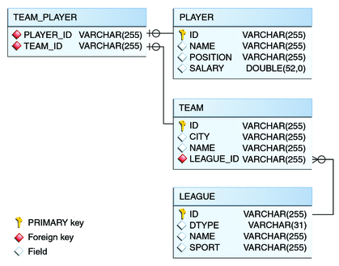

The roster Application
The roster application maintains the team rosters for players in recreational sports leagues. The application has four components: Java Persistence API entities (Player, Team, and League), a stateful session bean (RequestBean), an application client (RosterClient), and three helper classes (PlayerDetails, TeamDetails, and LeagueDetails).
Functionally, roster is similar to the order application, with three new features that order does not have: many-to-many relationships, entity inheritance, and automatic table creation at deployment time.
The database schema in the underlying Java DB database for roster is shown in Figure 33-2.
Figure 33-2 Database Schema for the roster Application
Note - In this diagram, for simplicity, the PERSISTENCE_ROSTER_ prefix is omitted from the table names.
Relationships in the roster Application
A recreational sports system has the following relationships:
A player can be on many teams.
A team can have many players.
A team is in exactly one league.
A league has many teams.
In roster this system is reflected by the following relationships between the Player, Team, and League entities.
There is a many-to-many relationship between Player and Team.
There is a many-to-one relationship between Team and League.
The Many-To-Many Relationship in roster
The many-to-many relationship between Player and Team is specified by using the @ManyToMany annotation. In Team.java, the @ManyToMany annotation decorates the getPlayers method:
@ManyToMany
@JoinTable(
name="EJB_ROSTER_TEAM_PLAYER",
joinColumns=
@JoinColumn(name="TEAM_ID", referencedColumnName="ID"),
inverseJoinColumns=
@JoinColumn(name="PLAYER_ID", referencedColumnName="ID")
)
public Collection<Player> getPlayers() {
return players;
}The @JoinTable annotation is used to specify a database table that will associate player IDs with team IDs. The entity that specifies the @JoinTable is the owner of the relationship, so the Team entity is the owner of the relationship with the Player entity. Because roster uses automatic table creation at deployment time, the container will create a join table named EJB_ROSTER_TEAM_PLAYER.
Player is the inverse, or nonowning, side of the relationship with Team. As one-to-one and many-to-one relationships, the nonowning side is marked by the mappedBy element in the relationship annotation. Because the relationship between Player and Team is bidirectional, the choice of which entity is the owner of the relationship is arbitrary.
In Player.java, the @ManyToMany annotation decorates the getTeams method:
@ManyToMany(mappedBy="players")
public Collection<Team> getTeams() {
return teams;
}
Entity Inheritance in the roster Application
The roster application shows how to use entity inheritance, as described in Entity Inheritance.
The League entity in roster is an abstract entity with two concrete subclasses: SummerLeague and WinterLeague. Because League is an abstract class, it cannot be instantiated:
...
@Entity
@Table(name = "EJB_ROSTER_LEAGUE")
public abstract class League implements java.io.Serializable {
...
}Instead, when creating a league, clients use SummerLeague or WinterLeague. SummerLeague and WinterLeague inherit the persistent properties defined in League and add only a constructor that verifies that the sport parameter matches the type of sport allowed in that seasonal league. For example, here is the SummerLeague entity:
...
@Entity
public class SummerLeague extends League
implements java.io.Serializable {
/** Creates a new instance of SummerLeague */
public SummerLeague() {
}
public SummerLeague(String id, String name,
String sport) throws IncorrectSportException {
this.id = id;
this.name = name;
if (sport.equalsIgnoreCase("swimming") ||
sport.equalsIgnoreCase("soccer") ||
sport.equalsIgnoreCase("basketball") ||
sport.equalsIgnoreCase("baseball")) {
this.sport = sport;
} else {
throw new IncorrectSportException(
"Sport is not a summer sport.");
}
}
}The roster application uses the default mapping strategy of InheritanceType.SINGLE_TABLE, so the @Inheritance annotation is not required. If you want to use a different mapping strategy, decorate League with @Inheritance and specify the mapping strategy in the strategy element:
@Entity
@Inheritance(strategy=JOINED)
@Table(name="EJB_ROSTER_LEAGUE")
public abstract class League implements java.io.Serializable {
...
}The roster application uses the default discriminator column name, so the @DiscriminatorColumn annotation is not required. Because you are using automatic table generation in roster, the Persistence provider will create a discriminator column called DTYPE in the EJB_ROSTER_LEAGUE table, which will store the name of the inherited entity used to create the league. If you want to use a different name for the discriminator column, decorate League with @DiscriminatorColumn and set the name element:
@Entity
@DiscriminatorColumn(name="DISCRIMINATOR")
@Table(name="EJB_ROSTER_LEAGUE")
public abstract class League implements java.io.Serializable {
...
}
Criteria Queries in the roster Application
The roster application uses Criteria API queries, as opposed to the JPQL queries used in order. Criteria queries are Java programming language, typesafe queries defined in the business tier of roster, in the RequestBean stateful session bean.
Metamodel Classes in the roster Application
Metamodel classes model an entity’s attributes and are used by Criteria queries to navigate to an entity’s attributes. Each entity class in roster has a corresponding metamodel class, generated at compile time, with the same package name as the entity and appended with an underscore character (_). For example, the roster.entity.Player entity has a corresponding metamodel class, roster.entity.Player_.
Each persistent field or property in the entity class has a corresponding attribute in the entity’s metamodel class. For the Player entity, the corresponding metamodel class is:
@StaticMetamodel(Player.class)
public class Player_ {
public static volatile SingularAttribute<Player, String> id;
public static volatile SingularAttribute<Player, String> name;
public static volatile SingularAttribute<Player, String> position;
public static volatile SingularAttribute<Player, Double> salary;
public static volatile CollectionAttribute<Player, Team> teams;
}
Obtaining a CriteriaBuilder Instance in RequestBean
The CrtiteriaBuilder interface defines methods to create criteria query objects and create expressions for modifying those query objects. RequestBean creates an instance of CriteriaBuilder by using a @PostConstruct method, init:
@PersistenceContext
private EntityManager em;
private CriteriaBuilder cb;
@PostConstruct
private void init() {
cb = em.getCriteriaBuilder();
}The EntityManager instance is injected at runtime, and then that EntityManager object is used to create the CriteriaBuilder instance by calling getCriteriaBuilder. The CriteriaBuilder instance is created in a @PostConstruct method to ensure that the EntityManager instance has been injected by the enterprise bean container.
Creating Criteria Queries in RequestBean’s Business Methods
Many of the business methods in RequestBean define Criteria queries. One business method, getPlayersByPosition, returns a list of players who play a particular position on a team:
public List<PlayerDetails> getPlayersByPosition(String position) {
logger.info("getPlayersByPosition");
List<Player> players = null;
try {
CriteriaQuery<Player> cq = cb.createQuery(Player.class);
if (cq != null) {
Root<Player> player = cq.from(Player.class);
// set the where clause
cq.where(cb.equal(player.get(Player_.position), position));
cq.select(player);
TypedQuery<Player> q = em.createQuery(cq);
players = q.getResultList();
}
return copyPlayersToDetails(players);
} catch (Exception ex) {
throw new EJBException(ex);
}
}A query object is created by calling the CriteriaBuilder object’s createQuery method, with the type set to Player because the query will return a list of players.
The query root, the base entity from which the query will navigate to find the entity’s attributes and related entities, is created by calling the from method of the query object. This sets the FROM clause of the query.
The WHERE clause, set by calling the where method on the query object, restricts the results of the query according to the conditions of an expression. The CriteriaBuilder.equal method compares the two expressions. In getPlayersByPosition, the position attribute of the Player_ metamodel class, accessed by calling the get method of the query root, is compared to the position parameter passed to getPlayersByPosition.
The SELECT clause of the query is set by calling the select method of the query object. The query will return Player entities, so the query root object is passed as a parameter to select.
The query object is prepared for execution by calling EntityManager.createQuery, which returns a TypedQuery<T> object with the type of the query, in this case Player. This typed query object is used to execute the query, which occurs when the getResultList method is called, and a List<Player> collection is returned.
Automatic Table Generation in the roster Application
At deployment time, the GlassFish Server will automatically drop and create the database tables used by roster. This is done by setting the eclipselink.ddl-generation property to drop-and-create-tables in persistence.xml:
<?xml version="1.0" encoding="UTF-8"?>
<persistence version="2.0"
xmlns="http://java.sun.com/xml/ns/persistence"
xmlns:xsi="http://www.w3.org/2001/XMLSchema-instance"
xsi:schemaLocation="http://java.sun.com/xml/ns/persistence
http://java.sun.com/xml/ns/persistence/persistence_2_0.xsd">
<persistence-unit name="em" transaction-type="JTA">
<jta-data-source>jdbc/__default</jta-data-source>
<properties>
<property name="eclipselink.ddl-generation"
value="drop-and-create-tables"/>
</properties>
</persistence-unit>
</persistence>This feature is specific to the Java Persistence API provider used by the GlassFish Server and is not portable across Java EE servers. Automatic table creation is useful for development purposes, however, and the eclipselink.ddl-generation property may be removed from persistence.xml when preparing the application for production use, when deploying to other Java EE servers, or when using other persistence providers.
Running the roster Example
You can use either NetBeans IDE or Ant to build, package, deploy, and run the roster application.
To Run the roster Example Using NetBeans IDE
- From the File menu, choose Open Project.
- In the Open Project dialog, navigate to:
tut-install/examples/persistence/
- Select the roster folder.
- Select the Open as Main Project and Open Required Projects check boxes.
- Click Open Project.
- In the Projects tab, right-click the roster project and select Run.
You will see the following partial output from the application client in the Output tab:
List all players in team T2: P6 Ian Carlyle goalkeeper 555.0 P7 Rebecca Struthers midfielder 777.0 P8 Anne Anderson forward 65.0 P9 Jan Wesley defender 100.0 P10 Terry Smithson midfielder 100.0 List all teams in league L1: T1 Honey Bees Visalia T2 Gophers Manteca T5 Crows Orland List all defenders: P2 Alice Smith defender 505.0 P5 Barney Bold defender 100.0 P9 Jan Wesley defender 100.0 P22 Janice Walker defender 857.0 P25 Frank Fletcher defender 399.0 ...
To Run the roster Example Using Ant
- In a terminal window, go to:
tut-install/examples/persistence/roster/
- Type the following command:
ant
This runs the default task, which compiles the source files and packages the application into an EAR file located at tut-install/examples/persistence/roster/dist/roster.ear.
- To deploy the EAR, make sure that the GlassFish Server is started; then
type the following command:
ant deploy
The build system will check whether the Java DB database server is running and start it if it is not running, then deploy roster.ear. The GlassFish Server will then drop and create the database tables during deployment, as specified in persistence.xml.
After roster.ear is deployed, a client JAR, rosterClient.jar, is retrieved. This contains the application client.
- To run the application client, type the following command:
ant run
You will see the output, which begins:
[echo] running application client container. [exec] List all players in team T2: [exec] P6 Ian Carlyle goalkeeper 555.0 [exec] P7 Rebecca Struthers midfielder 777.0 [exec] P8 Anne Anderson forward 65.0 [exec] P9 Jan Wesley defender 100.0 [exec] P10 Terry Smithson midfielder 100.0 [exec] List all teams in league L1: [exec] T1 Honey Bees Visalia [exec] T2 Gophers Manteca [exec] T5 Crows Orland [exec] List all defenders: [exec] P2 Alice Smith defender 505.0 [exec] P5 Barney Bold defender 100.0 [exec] P9 Jan Wesley defender 100.0 [exec] P22 Janice Walker defender 857.0 [exec] P25 Frank Fletcher defender 399.0 ...
The all Task
As a convenience, the all task will build, package, deploy, and run the application. To do this, type the following command:
ant all